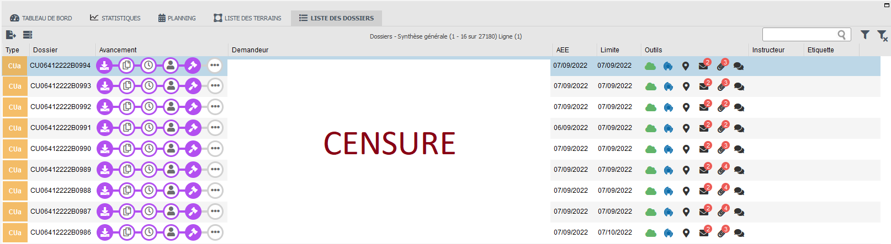

La ville de Biarritz est abonnée au SaaS Clicmap, le logiciel phare d’IF Technologies (l’entreprise dans laquelle j’ai réalisé mon alternance de 2 ans). Biarritz utilise Clicmap pour répertorier et instruire tous ses dossiers d’urbanisme (Permis de construire, Déclaration préalable, Certificat d'urbanisme, Autorisation de travaux). Les dossiers sont déposés via une plateforme web ouverte au public e-permis, qui permet à un particulier, une entreprise ou un notaire de déposer rapidement et facilement un permis de construire par exemple.
Clicmap est utilisé par environ 800 communes en France et à compter du 1er janvier 2022, les communes de plus de 3500 habitants doivent s'orienter vers la dématérialisation pour l'instruction, pour plus d'informations : PLAT’AU-@CTES
Les CUa (Certificat d'urbanisme d’information) sont nécessaires avant de commencer un projet urbain pour connaître le régime juridique auquel le terrain est soumis, les limites au droit de propriété (servitudes d'utilité publique par exemple) ou les taxes et participations d’urbanisme.
La problématique concernant la ville de Biarritz est qu’elle reçoit au moins 5 CUa (Certificat d'urbanisme d’information) de manière dématérialisée par jour, ce qui nécessite de mobiliser une personne du service urbanisme pour réceptionner et instruire ces dossiers. Ce qui peut facilement prendre au minimum 2 heures de temps, tous les jours.
L’entreprise IF Technologies a donc été mandatée pour mettre au point un script qui réceptionne et instruit les dossiers de manière autonome, afin de soulager le service urbanisme de Biarritz.
On m’a ensuite confié la réalisation de ce projet.
Avant de plonger tête baissée dans le développement, j’ai préféré réaliser un diagramme de séquence qui résume toutes les actions du script, pour ensuite le partager avec la cheffe du service urbanisme pour confirmer les étapes du script.
Une fois le diagramme validé, j’ai pu commencer le développement, j’ai d’abord écrit en commentaire les étapes que je devais suivre. Puis j’ai développé chaque étape en utilisant autant que possible les fonctions déjà existantes, j’ai aussi pris soin de commenter mon code pour qu’un prochain développeur puisse mieux comprendre à quoi est destiné tel ou tel bout de code ou fonction.
Capture d'écran de clicmap, SaaS pour l'instruction du droit des sols
Il récupère tous les CUa en attente de réception sur la commune de Biarritz pour les importer dans le logiciel d’instruction Clicmap, pour fournir au demandeur le récépissé de dépôt et l’arrêté signé par l’élue qui donnent les informations concernant le terrain où est destiné le projet urbain.
Ensuite pour l’exécution du script, nous avons demandé à la mairie de Biarritz quand elle souhaitait importer, instruire et fournir les éléments au demandeur. Ils ont choisi d’importer automatiquement les CUa tous les jours à 17h. Les demandeurs seront ravis d’obtenir dans un délai d’un seul jour la réponse, contrairement à 5 voire 10 jours si c’est un utilisateur qui s’occupe de l’instruction.
Pour exécuter ce script tous les jours à 17h il faut créer un CRON sur le serveur, qui lance un fichier BASH (.sh) contenant un appel CURL vers un lien pointant sur mon fichier PHP.
Finalement, le script est bien fonctionnel il a été livré à la date prévue, il est utilisé tous les jours depuis le jeudi 1 septembre. Ce projet libère du temps au personnel du service urbanisme pour réaliser d’autres tâches. Ce script peut aussi évoluer pour importer et instruire d’autres types de dossiers d’urbanisme automatiquement.
Ce projet m’a permis une meilleure compréhension de l’environnement global du Logiciel. Reprendre chaque étape m’a fait comprendre comment fonctionne le logiciel dans les grandes lignes.
Cela m’a permis d’approfondir mes connaissances en PHP, apprendre à utiliser l’api PLATAU, savoir comment lier plusieurs services déjà présents comme une api et des fonctions existantes. J’ai aussi appris à mieux m’organiser pour respecter la date de rendu.
Le fait que mon travail soit utile tous les jours pour une ville comme Biarritz, m’a motivé pendant la réalisation du projet.